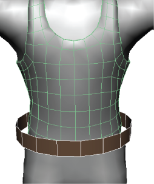
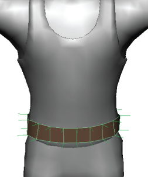

沿法线收缩包裹
- 在场景中，选择一个包裹器对象，然后按住 Shift 键并选择目标对象。

- 选择“变形 > (创建)收缩包裹”(Deform > (Create) Shrinkwrap) >
 。
。
- 在显示的“创建收缩包裹选项”(Create Shrinkwrap Options)窗口中，从“投影”(Projection)下拉列表中选择“顶点法线”(Vertex Normals)。
- （可选）设置其他创建选项。请参见收缩包裹选项。
- 单击“创建”(Create)。
将创建一个“收缩包裹”(shrinkwrap)节点，并且包裹器沿法线收缩包裹。